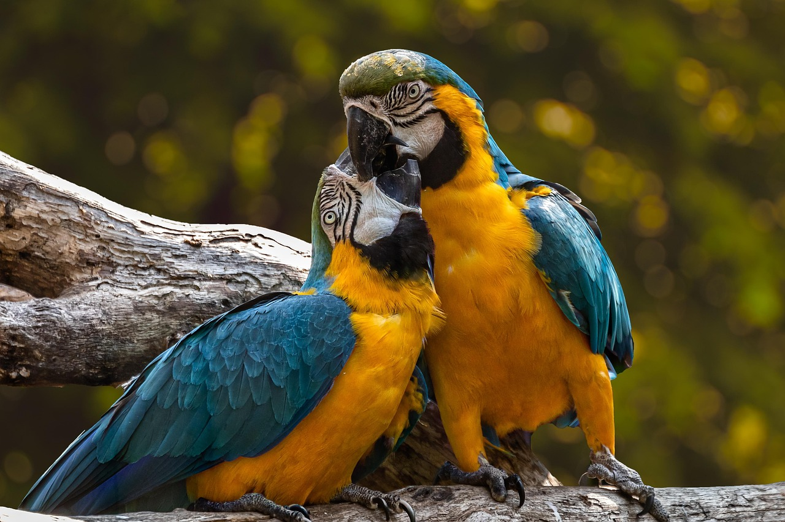
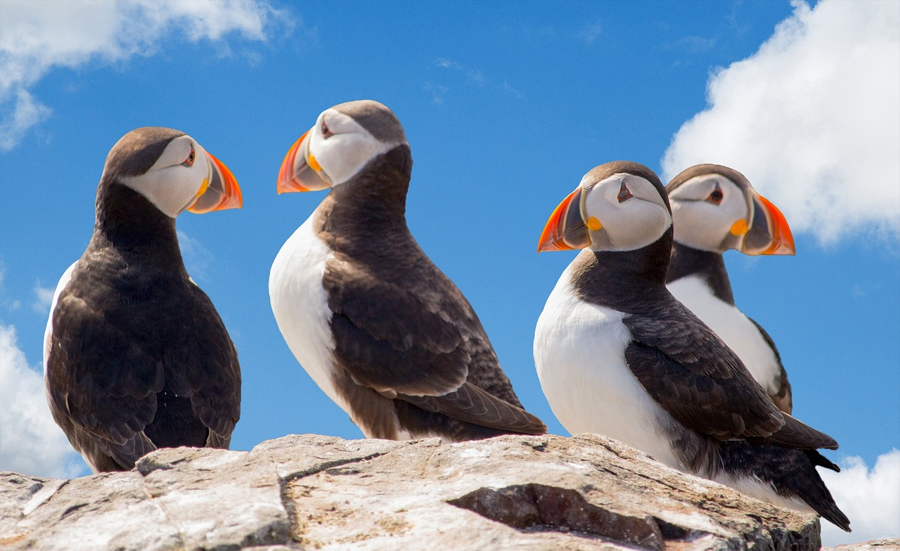
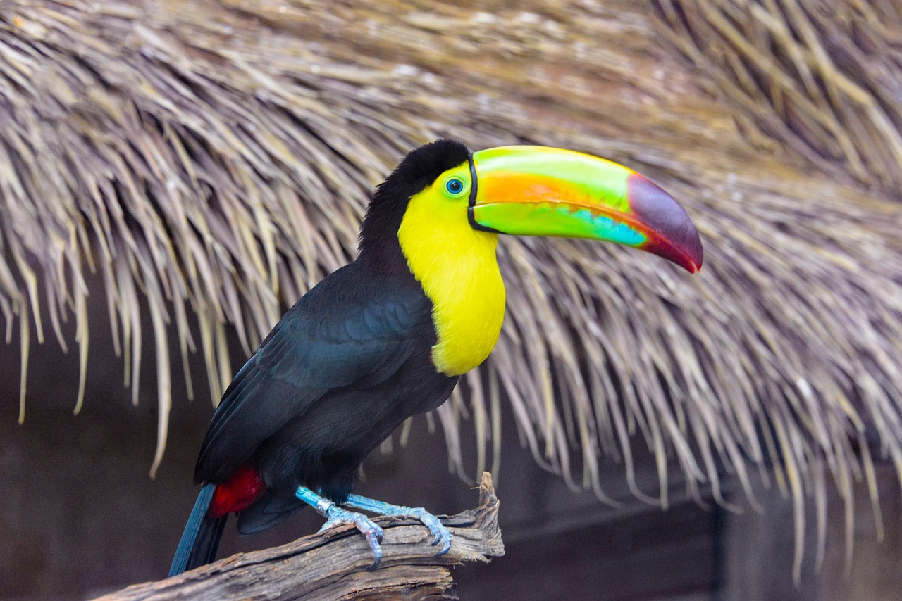
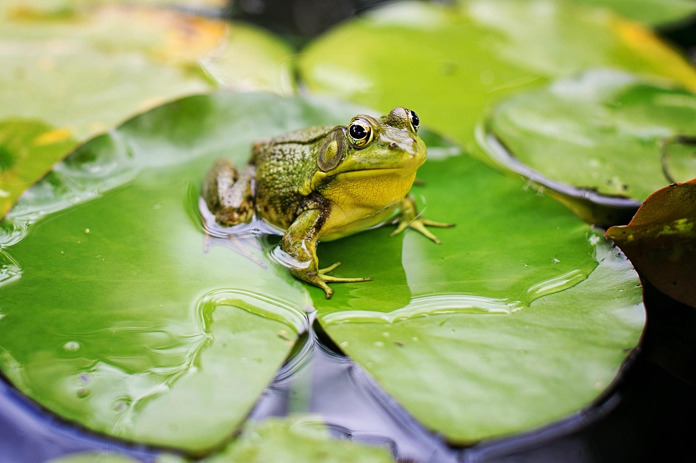
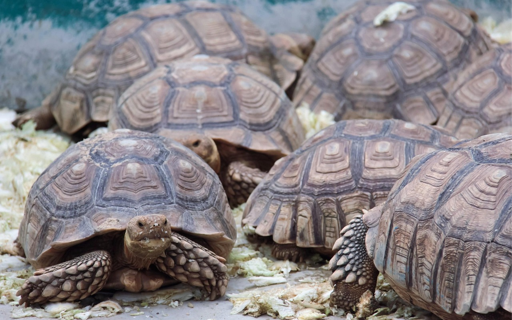
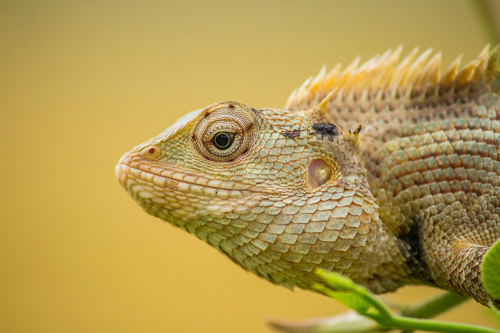

Los loros viven en zonas diversas pueden vivir tanto en selvas amazónicas como en áridos bosques en Australia. Por lo tanto no tienen un hábitad típico aunque prefieren los climas tropicales y subtropicales. Se caracteriza por un patrón de color llamativo y por su capacidad de imitar el habla humana.

Una de las aves marinas más habituales que frecuentan los fríos mares del norte de Europa,el frailecillo atlántico, resulta también una de las más fácilmente reconocibles gracias a su característica morfología y, sobre todo, a su llamativo pico de forma triangular, comprimido lateralmente y colorido. Esta ave, sin embargo, resulta poco común en las costas españolas, donde se presenta en bajo número durante el invierno.

El tucán es una ave perteneciente a la familia de los ranfástidos, que incluye tanto a los tucanes verdaderos como a los arasaris. Estas aves son nativas principalmente de América Central y América del Sur. Se caracterizan por su pico largo y colorido, que es famoso por su tamaño desproporcionado en comparación con el resto de su cuerpo. Aunque los tucanes son aves relativamente grandes, sus plumas suelen ser más suaves y menos densas que las de otras aves, lo que les permite moverse ágilmente entre las ramas de los árboles.

Las ranas pueden vivir en una gran variedad de hábitats, desde ríos y arroyos hasta bosques tropicales y zonas subárticas. Son un tipo de anfibios caracterizados principalmente por su gran capacidad de salto gracias a la morfología de sus extremidades posteriores.

También conocidos como quelonios, las tortugas son un tipo de reptiles caracterizados por el sólido caparazón que protege sus órganos vitales del que emergen la cabeza, las patas y la cola. Son animales ovíparos que cavan sus nidos en la tierra, donde llevan a cabo la incubación de los huevos. A pesar de que carecen de dientes, cuentan con un fuerte pico que usan para alimentarse. Además de plantas, también comen insectos, caracoles y lombrices. Existen especies marinas y terrestres. Las tortugas pueden ser animales muy longevos, viven entre 50 y 80 años y en algunos casos llegan a los 100.

Los camaleones son reptiles de la familia Chamaeleonidae, conocidos por su habilidad de cambiar de color y su lengua extensible. Habitan principalmente en África y Madagascar, aunque también se pueden encontrar en Europa y algunas partes de Asia. Los camaleones son arbóreos y suelen vivir en los árboles y arbustos, aunque algunas especies pueden ser más terrestres. Su dieta incluye insectos, pequeños animales, plantas y algunas frutas.
